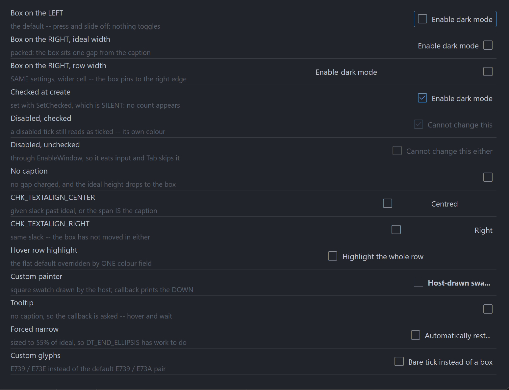

PsCheckBox
An owner-drawn checkbox for FreeBASIC + Win32, built on AfxNova and PsBufferPaint. It draws a box glyph from a font — Segoe Fluent Icons by default — and an optional caption, with a focus ring around the pair. The box can sit on either side of the caption. You supply the colours and the fonts; the control owns the geometry and the state.
It is a real HWND, so you place and size it with SetWindowPos like any other control. It takes focus, tracks hover and press, greys itself when disabled through EnableWindow, and tells you when the user changed its state. It has two states — checked and unchecked. There is no indeterminate state.
The box is one composite glyph per state: U+E739, an empty outlined square, for unchecked, and U+E73A, the same square with a tick in it, for checked. Both are settable. That single decision shapes the rest of the control: the outline and the tick are one piece of ink in one colour, so an accent-filled box with a contrasting white tick is not reachable without a paint callback — but everything about the box's appearance is swappable by changing a font or a codepoint.
What it looks like

Requirements
Copy these files into your project:
| File | Purpose |
|---|---|
PsCheckBox.bi | Public surface: types, colours, constants, declarations |
PsCheckBox.inc | Implementation |
PsBufferPaint.bi | The double-buffered drawing surface the control paints through |
PsBufferPaint.inc | |
PsTipHost.bi / PsTipHost.inc | The tooltip backend switch — see Tooltips: two backends |
PsTooltip.bi / PsTooltip.inc | The owner-drawn tooltip. Required even if you never switch to it: PsTipHost.inc includes it. |
You also need AfxNova on the include path (-i "C:\dev" if your tree matches this one), and a font supplying the box glyph — SegoeFluentIcons.ttf ships with this repo.
Include order
PsCheckBox.inc includes PsCheckBox.bi, which includes PsBufferPaint.bi and PsTipHost.bi; PsCheckBox.inc also includes PsTipHost.inc, which in turn includes PsTooltip.inc. So the tooltip files need no include line of your own. The implementation of PsBufferPaint is the one thing not pulled in for you, so include it yourself, first:
#include once "windows.bi"
#include once "AfxNova\CWindow.inc"
#include once "AfxNova\AfxStr.inc"
#include once "AfxNova\AfxGdiplus.inc"
using AfxNova
#include once "PsBufferPaint.inc"
#include once "PsCheckBox.inc"Beyond that there is no ordering trap: PsCheckBox.bi names no type it does not itself include, so it compiles at any site that has already loaded PsBufferPaint.
GDI+ must be running
PsBufferPaint renders all geometry through GDI+. Initialize it before the first repaint and shut it down after every window is destroyed:
dim as ULONG_PTR gdipToken = AfxGdipInit()
function = frmMain_Show( 0 )
AfxGdipShutdown( gdipToken )Without the bracket the control draws nothing.
Do not name anything ok
GDI+ defines Ok = 0 as a Status enum value in namespace AfxNova, and your host almost certainly says using AfxNova. Any identifier of your own called ok becomes a duplicate definition the moment you adopt this control. Use bOK.
Message pump
There is no PsCheckBox_FilterMessage. This control owns no popup and no second top-level window, so it adds no pump obligation — unlike PsComboBox, PsNumericUpDown and PsTextBox, which all do. If you arrived from one of those, there is nothing to look for here.
Two things your pump does need, because the control is focusable. First, IsDialogMessage:
do while GetMessage(@uMsg, null, 0, 0)
if uMsg.message = WM_QUIT then exit do
' IsDialogMessage is what makes Tab move between controls.
if IsDialogMessage(pWindow->hWindow, @uMsg) = 0 then
TranslateMessage @uMsg
DispatchMessage @uMsg
end if
loopSecond, once at startup, focus on one of your controls:
SetFocus( hCheck )IsDialogMessage only acts when the focused window is already a descendant of the window you pass it. Without that SetFocus, Tab does nothing until the user clicks something — a symptom that reads as broken tabstops. A dialog does this for you in WM_INITDIALOG; an ordinary CWindow host must do it itself.
Without IsDialogMessage the control still works fully with the mouse, and with Space and Enter once it has focus. Only Tab navigation is lost.
Quick start
dim as HWND hCheck = PsCheckBox_Create( hWndParent, IDC_MYCHECK )
PsCheckBox_SetFont( hCheck, ghFont(GUIFONT_10) ) ' caption font, and the MEASURING font
PsCheckBox_SetGlyphFont( hCheck, ghFont(SYMBOLFONT_12) ) ' Segoe Fluent Icons
PsCheckBox_SetText( hCheck, "Enable dark mode" )
PsCheckBox_SetChecked( hCheck, true ) ' silent: fires no callback
PsCheckBox_SetCheckChangedCallback( hCheck, @OnDarkModeChanged )
' Size it to what it actually needs, then place it.
dim as long iw, ih
PsCheckBox_GetIdealSize( hCheck, iw, ih )
SetWindowPos( hCheck, 0, 20, 20, iw, ih, SWP_NOZORDER )
ShowWindow( hCheck, SW_SHOW )sub OnDarkModeChanged( byval hCheckBox as HWND, byval isChecked as boolean )
dim as string s = "dark mode = " & str(isChecked)
print s
end subThat callback fires for a completed click, for Space or Enter, and for PsCheckBox_Toggle. It does not fire for PsCheckBox_SetChecked.
Concepts
The handle is a real window
PsCheckBox_Create returns an HWND, not an opaque type, because you legitimately need to treat the control as a window — SetWindowPos, ShowWindow, EnableWindow, GetDlgItem. The CtrlID you pass becomes the window's GWLP_ID and the initial SetID value.
The control frees itself when its window is destroyed, and destroys its tooltip with it. The two fonts you hand it stay yours to delete.
Geometry is derived, never set
You never assign a rectangle. You set inputs — padding, box size, gap, focus ring — and the control derives four rectangles from them, lazily: a setter marks the layout stale, and the next paint or rect query does a single measuring pass. A burst of setters costs one measurement, not one each.
ringPad = nFocusGap + nFocusThick reserved ALWAYS, focused or not
textW = measured caption width 0 when there is no caption
textH = GetTextMetrics.tmHeight one height for the control
textBlock = hasText ? nBoxGap + textW : 0
contentH = max( hasText ? textH : 0 , nBoxHeight )
nIdealW = 2*ringPad + nPadLeft + nBoxWidth + textBlock + nPadRight
nIdealH = 2*ringPad + nPadTop + contentH + nPadBottom
rcContent = rcClient deflated by ringPad on all four sides
rcVisual = rcContent inflated by ringPad ( = rcClient when sized ideally )
BOXALIGN_LEFT rcBox at rcContent.left + nPadLeft, nBoxWidth x nBoxHeight, v-centred
rcText = ( rcBox.right + nBoxGap , rcContent.right - nPadRight )
BOXALIGN_RIGHT rcBox at rcContent.right - nPadRight - nBoxWidth, same, v-centred
rcText = ( rcContent.left + nPadLeft , rcBox.left - nBoxGap )PsCheckBox_GetIdealSize is valid before the control has ever been sized — the measuring pass runs ahead of the check for a client area, precisely so you can call it to decide how big to make the control in the first place. It is also unaffected by starving the control's client area, so a host that always sizes with it can never see an ellipsis.
The box is pinned; the caption gets the leftover
The box cell is pinned to the padding on whichever side you put it, and the caption takes the whole span left over. One model, two looks, decided entirely by the width you give the control:
sized to GetIdealSize [x] Enable dark mode packed
sized to a row width Enable dark mode [x] settings rowSo a column of CHK_BOXALIGN_RIGHT checkboxes all given the same width will line their boxes up for free. Flipping the side does not change the ideal size — the box cell, the gap and both paddings are all still charged, they have only swapped ends.
PsCheckBox_SetTextAlign places the caption inside that span, not inside the control. With the box on the left and CHK_TEXTALIGN_RIGHT, the caption goes to the right-hand end of the span, not to the right-hand edge of the window. Sized to its ideal width the span is the caption, so all three alignments render identically — alignment only becomes visible once the control has slack.
The box cell is declared, not measured
PsCheckBox_SetBoxSize states how much room the glyph gets. The control never measures the glyph font, so a glyph too large for its cell clips rather than resizing the control. This is why PsCheckBox_SetGlyphFont repaints but never re-lays-out, and why swapping either glyph string can never change the ideal width.
Setters are silent; user interaction notifies
PsCheckBox_SetChecked changes the state and fires nothing — Win32's BM_SETCHECK / BN_CLICKED split. That is what makes it safe to call from inside your own change handler without recursing.
The one deliberate exception is PsCheckBox_Toggle, which flips the state and fires the callback. It is an action, not a setter — the equivalent of BM_CLICK, and the door your accelerator uses, since this control parses no mnemonics.
Focus and keyboard
The control is a WS_TABSTOP with real focus tracking and a painted focus ring. Space and Enter both toggle it while it is focused.
Enter is a departure from a system checkbox, which ignores it and lets it reach the dialog's default button. If that matters to your dialog, intercept WM_KEYDOWN through the message callback and return TRUE for VK_RETURN.
The focus ring's band is reserved whether or not the control has focus, so nothing moves when focus arrives — which also means the ring settings contribute to the ideal size.
Mouse capture and the cancelled gesture
The control takes mouse capture on a press, because press → slide off → release must not toggle. Only a matched press and release with the cursor still inside counts as a click. While the press is live the hover state keeps tracking, so sliding off visibly un-flashes the control before the release decides that nothing happened.
Behaviour and limits
- Two states only.
isCheckedis abooleaneverywhere, including in the change callback. There is no indeterminate / tri-state. - One colour per box. The composite glyph is a single piece of ink, so the box outline and the tick inside it always share a colour. A two-colour box needs a paint callback.
- No mnemonics.
"&Enable"draws a literal ampersand.PsBufferPaint.PaintTextforcesDT_NOPREFIX, so this is enforced by the renderer rather than merely intended. Wire an accelerator toPsCheckBox_Toggleinstead. - No multiline. One line, ellipsized into the caption span. Wrapping would make the ideal height depend on the assigned width, which would cost
GetIdealSizeits "valid before sizing" guarantee. - No
HICONpath. The box comes from a font, or from your paint callback. - No
WM_COMMAND/BN_CLICKEDto the parent. State changes reach you through the callback only. - No
CS_DBLCLKS. A rapid second click is a legitimate second toggle; enabling double-clicks would turn it into aWM_LBUTTONDBLCLKthe control would drop. - No hit test. The whole client is the hit area — clicking the caption toggles, exactly as a system checkbox does — so a hit test could only ever be
PtInRect(client). - Overflow is honest, not squeezed. Too narrow, and the box keeps its declared size and its padding while the caption span collapses to zero width and the caption ellipsizes. Too short, and the content clips rather than deforming.
- Removing the caption drops the content height to the box alone. A caption-less checkbox is therefore never taller than a captioned one, and is shorter whenever the box is smaller than a line of text — which it is at the defaults. If you are laying out a column of mixed rows, take the max of the ideal heights yourself.
SetGlyphFontis worth setting. Unset, the glyph falls back to the caption font, which will draw the Fluent codepoint as a missing-glyph box.
API reference
Creation
| Function | Behaviour |
|---|---|
PsCheckBox_Create( hWndParent, CtrlID ) as HWND | Creates the control, zero-sized and hidden. CtrlID becomes GWLP_ID and the initial SetID value. Size it with GetIdealSize and place it with SetWindowPos, or turn on SetAutoSize. |
Content
All silent — they change what is drawn, never what was clicked.
| Function | Behaviour |
|---|---|
PsCheckBox_GetText( hCheckBox ) as DWSTRING | The caption. |
PsCheckBox_SetText( hCheckBox, Text ) | Sets the caption and re-measures. "" removes it, which also gives back the box gap and drops the content height to the box alone. Also reachable as the window text — see below. |
PsCheckBox_GetGlyphUnchecked( hCheckBox ) as DWSTRING | The codepoint(s) drawn when unchecked. |
PsCheckBox_SetGlyphUnchecked( hCheckBox, Glyph ) | Replaces it. Repaints only — the cell is declared, so this can never change the ideal size. "" draws nothing while still charging the cell and the gap. |
PsCheckBox_GetGlyphChecked( hCheckBox ) as DWSTRING | The codepoint(s) drawn when checked. |
PsCheckBox_SetGlyphChecked( hCheckBox, Glyph ) | As above, for the checked state. |
PsCheckBox_GetID( hCheckBox ) as long | The stored host id. |
PsCheckBox_SetID( hCheckBox, id ) | A host payload only. The control never uses it as a command id, so it cannot collide with anything. |
PsCheckBox_GetItemData( hCheckBox ) as integer | Free-form host payload. |
PsCheckBox_SetItemData( hCheckBox, itemData ) | Stores it. The control never reads it. |
The caption has one store reached through two doors: the control handles WM_SETTEXT, WM_GETTEXT and WM_GETTEXTLENGTH against the same field, so SetWindowText and GetWindowText work and generic code that walks children and reads their text sees a real caption. SetWindowText re-measures exactly as SetText does.
State
| Function | Behaviour |
|---|---|
PsCheckBox_GetChecked( hCheckBox ) as boolean | The current state. |
PsCheckBox_SetChecked( hCheckBox, isChecked ) | Silent — fires no callback. Repaints only; never re-measures, since both glyphs share one declared cell. Does nothing if the state already matches. |
PsCheckBox_GetEnabled( hCheckBox ) as boolean | |
PsCheckBox_SetEnabled( hCheckBox, isEnabled ) | Goes through EnableWindow, so the disable is enforced by the system: the control gets no mouse input and Tab skips it. Clears hover and any live press at once. Does not change the checked state. |
PsCheckBox_GetFocused( hCheckBox ) as boolean | Answers for this window directly — there is no inner child holding focus. |
PsCheckBox_Refresh( hCheckBox ) | Marks the layout stale and invalidates with a background erase. |
Reaching for EnableWindow yourself instead of SetEnabled also works: the control handles WM_ENABLE and syncs its own flag, so it still renders greyed rather than looking live while eating input.
Action
| Function | Behaviour |
|---|---|
PsCheckBox_Toggle( hCheckBox ) | Flips the state and fires CheckChangedCallback — an action, not a setter. Refused outright on a disabled control. Does not paint a press flash. |
Geometry and layout
Every setter takes raw pixels; you do the DPI scaling. Only the Create-time defaults are scaled for you, and nFocusThick is never scaled at all — a hairline should stay a hairline.
| Function | Behaviour |
|---|---|
PsCheckBox_GetBoxAlign( hCheckBox ) as long | CHK_BOXALIGN_LEFT or CHK_BOXALIGN_RIGHT. |
PsCheckBox_SetBoxAlign( hCheckBox, nBoxAlign ) | Puts the box on that side, pinned to that side's padding. Values outside the enum are ignored. Does not change the ideal size, so it never triggers auto-size. |
PsCheckBox_GetTextAlign( hCheckBox ) as long | CHK_TEXTALIGN_*. |
PsCheckBox_SetTextAlign( hCheckBox, nTextAlign ) | Places the caption within its span, not within the control. Values outside the enum are ignored. Repaints only — the span does not move, just the ink inside it. |
PsCheckBox_GetPadding( hCheckBox, nLeft, nTop, nRight, nBottom ) | All four, by reference. |
PsCheckBox_SetPadding( hCheckBox, nLeft, nTop, nRight, nBottom ) | Negative values are clamped to 0. Changes the ideal size. |
PsCheckBox_GetBoxGap( hCheckBox ) as long | |
PsCheckBox_SetBoxGap( hCheckBox, nBoxGap ) | Space between the box cell and the caption. Charged only when there is a caption. Negative clamps to 0. |
PsCheckBox_GetBoxSize( hCheckBox, nBoxWidth, nBoxHeight ) | |
PsCheckBox_SetBoxSize( hCheckBox, nBoxWidth, nBoxHeight ) | The declared cell for the glyph. Nothing is measured, so this is the only thing deciding how much room the glyph gets. Negative clamps to 0. |
PsCheckBox_GetFocusRing( hCheckBox, nGap, nThickness ) | |
PsCheckBox_SetFocusRing( hCheckBox, nGap, nThickness ) | Gap from the content to the ring, and the ring's own thickness. Both are reserved unconditionally, so changing either changes the ideal size. Negative clamps to 0; thickness 0 disables the ring. |
PsCheckBox_GetFocusCurvature( hCheckBox ) as long | |
PsCheckBox_SetFocusCurvature( hCheckBox, nCurvature ) | An ellipse diameter, not a radius: 8 draws a 4px radius. 0 gives square corners. Repaints only — the band's width is the gap plus the thickness, not the curvature. Negative clamps to 0. |
PsCheckBox_GetAutoSize( hCheckBox ) as boolean | |
PsCheckBox_SetAutoSize( hCheckBox, bAutoSize ) | When true the control SetWindowPoses itself to its ideal size, keeping its top-left, and applies it immediately. Default false. |
PsCheckBox_GetIdealSize( hCheckBox, nWidth, nHeight ) | Forces any pending layout and returns the measured size. Valid before the control has ever been sized, and unaffected by starving the control's client area. |
PsCheckBox_GetContentRect( hCheckBox, rc ) as boolean | The client deflated by the focus-ring band. Returns FALSE if the control has no geometry yet. |
PsCheckBox_GetBoxRect( hCheckBox, rc ) as boolean | The box cell. Never empty. |
PsCheckBox_GetTextRect( hCheckBox, rc ) as boolean | The caption span. Empty when there is no caption; degenerate (left = right) when the client is too narrow. Returns TRUE either way — empty is the honest answer. |
PsCheckBox_GetVisualRect( hCheckBox, rc ) as boolean | The content inflated by the ring band; equals the client when the control is sized ideally. |
All four rect queries force a pending layout first, so results are always current.
With auto-size on, the setters that re-apply it are exactly the ones that can move the ideal size: SetText (and WM_SETTEXT), SetFont, SetPadding, SetBoxGap, SetBoxSize, SetFocusRing, and SetAutoSize itself.
Appearance
| Function | Behaviour |
|---|---|
PsCheckBox_GetColors( hCheckBox, pColors ) | Fills your struct. The read-modify-write idiom is Get, assign one field, Set. Does nothing if pColors is null. |
PsCheckBox_SetColors( hCheckBox, pColors ) | Copies the whole struct and repaints. Does nothing if pColors is null. |
PsCheckBox_GetFont( hCheckBox ) as HFONT | |
PsCheckBox_SetFont( hCheckBox, hTextFont ) | The caption font, and the measuring font. Changing it re-measures and can change the ideal size. Borrowed, never owned. Unset, the control measures and paints with the stock GUI font. |
PsCheckBox_GetGlyphFont( hCheckBox ) as HFONT | |
PsCheckBox_SetGlyphFont( hCheckBox, hGlyphFont ) | The box font. A paint-time input only: repaints, never re-lays-out, never resizes. Unset, it falls back to the caption font. Borrowed, never owned. |
Colour resolution
Both are pure functions — no control handle, no globals — so you can call them from your own paint callback to get exactly the colours the built-in painter would have used.
| Function | Behaviour |
|---|---|
PsCheckBox_ResolveMood( isEnabled, isPressed, isHot ) as long | Returns a CHK_MOOD_* value. Precedence is disabled > pressed > hot > idle. |
PsCheckBox_ResolveColors( pColors, nMood, isChecked, clrBack, clrFore, clrBox ) | Fills the three output colours by reference. isChecked selects between the two box colour sets within the mood and affects nothing else. Does nothing if pColors is null. |
Tooltips
| Function | Behaviour |
|---|---|
PsCheckBox_GetTooltipText( hCheckBox ) as DWSTRING | |
PsCheckBox_SetTooltipText( hCheckBox, Text ) | The control's own tip text. When non-empty it wins over the callback. Stores only — the tip is pulled on demand, so there is nothing to repaint. |
PsCheckBox_GetTooltipHandle( hCheckBox ) as HWND | The comctl32 tooltip window, for any TTM_* message you want to send it yourself. The control owns it and destroys it. Returns 0 while this control is on the PsTooltip backend — the honest answer, since a TTM_* sent to a PsTooltip window is silently ignored. |
PsCheckBox_GetPsTooltipHandle( hCheckBox ) as HWND | The PsTooltip window, or 0 while on the system backend. The door to PsTooltip_SetColors / SetFonts / SetStyle / SetMaxWidth / SetTitle / SetGlyph — none of which is mirrored here. |
PsCheckBox_SetTooltipMode( hCheckBox, nMode ) as boolean | PSTIP_MODE_SYSTEM (default) or PSTIP_MODE_PS. See below. |
PsCheckBox_GetTooltipMode( hCheckBox ) as long | Which backend is live. |
PsCheckBox_SetHoverTime( hCheckBox, milliseconds ) | Initial delay (TTDT_INITIAL) — how long the cursor must rest. Honoured by both backends. |
PsCheckBox_SetAutoPopTime( hCheckBox, milliseconds ) | How long the tip stays up (TTDT_AUTOPOP). |
PsCheckBox_SetReshowTime( hCheckBox, milliseconds ) | The shorter delay after a tip was recently dismissed (TTDT_RESHOW). |
Resolution order: the control's own text, then TooltipCallback, then nothing. There is no caption fallback — a checkbox whose caption is already on screen would otherwise pop a tip that just repeats it.
Tooltips: two backends
The control ships on the system (comctl32) tooltip it has always used. PSTIP_MODE_PS switches this instance to PsTooltip: owner-drawn, themeable, word-wrapping without a hand-sent TTM_SETMAXTIPWIDTH, and — the one that matters structurally — not a subclass of the control it serves, so it still works when the window under the cursor is a descendant rather than the control itself. Either way the control adds no pump obligation: PsTooltip has no FilterMessage.
The default is deliberate, not caution. PsTooltip's colour defaults are dark, so a control that switched itself would put a dark tip on a light form. Theme every tip in the process with PsTooltip_SetDefaultColors and friends, then opt in per instance.
The mode changes how a tip is drawn, never what it says. Both backends resolve text through the same rule — this control's own text first, then TooltipCallback, then nothing.
A delay you set is stored as well as pushed, so it survives a switch in either direction. A delay you never set keeps the backend's own derivation from the system double-click time, which is what makes a tip appear on the same beat as every other tip on the machine.
PsTooltip_SetDefaultColors( @myTipColors ) ' once, at startup, for every tip in the process
PsTooltip_SetDefaultFonts( ghFontUI )
PsCheckBox_SetTooltipMode( hCheck, PSTIP_MODE_PS )
PsCheckBox_SetHoverTime( hCheck, 400 )
dim as HWND hTip = PsCheckBox_GetPsTooltipHandle( hCheck )
if hTip then PsTooltip_SetTitle( hTip, "Dark mode" ) ' not reachable on the system backendCallback registration
| Function | Behaviour |
|---|---|
PsCheckBox_SetPaintCallback( hCheckBox, usersub ) | Replaces the built-in painter wholesale, and repaints. |
PsCheckBox_SetMessageCallback( hCheckBox, userfunc ) | Observe mouse, focus and key messages. |
PsCheckBox_SetTooltipCallback( hCheckBox, userfunc ) | Supply tip text on demand. |
PsCheckBox_SetCheckChangedCallback( hCheckBox, usersub ) | User-driven state changes. |
Pass 0 to any of them to remove the callback.
Render probes
Neither is called by the control. They exist so a host writing its own paint callback can assert two specific defects rather than eyeball them. Both render the control offscreen with its current painter and with focus forced on, so the focus-ring step — the one the flood defect lives on — is actually exercised.
| Function | Behaviour |
|---|---|
PsCheckBox_CountRenderedTones( hCheckBox, nPart ) as long | How many distinct colours land inside one CHK_PART_* rect, capped at 64. Returns 0 if the control has no geometry or the part rect is empty. A part wiped by an unintended fill is literally one tone, so the useful assertion is > 1. |
PsCheckBox_HashRenderedPart( hCheckBox, nPart ) as ulong | An FNV-1a hash of the pixels in one CHK_PART_* rect. Compare two states to prove a change actually reached the surface. Returns 0 on failure. |
HashRenderedPart can only ever prove difference, never correctness — and only for what you isolate. Comparing checked against unchecked proves "the state reached the pixels", but not that the glyph did, because the box colour changes too. To isolate one variable, flatten the other first: set all eight box colours to the same value and the only thing left that can move a pixel is the glyph.
Colors
PSCHECKBOX_COLORS is a flat struct of COLORREF fields, all with defaults. Copy semantics: Set takes a copy, Get fills one out.
| Field | Paints | When |
|---|---|---|
BackColor | The whole client | Idle |
BackColorHot | The whole client | Cursor over the control |
BackColorPressed | The whole client | Live left press, cursor still inside |
BackColorDisabled | The whole client | Disabled |
ForeColor | The caption | Idle |
ForeColorHot | The caption | Hot |
ForeColorPressed | The caption | Pressed |
ForeColorDisabled | The caption | Disabled |
BoxColor | The box glyph | Unchecked, idle |
BoxColorHot | The box glyph | Unchecked, hot |
BoxColorPressed | The box glyph | Unchecked, pressed |
BoxColorDisabled | The box glyph | Unchecked, disabled |
BoxColorChecked | The box glyph | Checked, idle |
BoxColorCheckedHot | The box glyph | Checked, hot |
BoxColorCheckedPressed | The box glyph | Checked, pressed |
BoxColorCheckedDisabled | The box glyph | Checked, disabled |
FocusRingColor | The focus ring | Whenever the control has focus |
Precedence: disabled > pressed > hot > idle. The checked flag is not a mood — it selects between the two box colour sets inside whichever mood resolved, and touches nothing else. That is also why a disabled ticked box still reads as ticked: it has its own colour.
The control reads completely flat out of the box. BackColorHot, BackColorPressed and BackColorDisabled all default equal to BackColor, so hovering changes only the box and the caption. That is usually what you want in a settings pane. To get a menu-style highlight across the whole row, set one field:
dim as PSCHECKBOX_COLORS c
PsCheckBox_GetColors( hCheck, @c )
c.BackColorHot = BGR( 44, 49, 58)
PsCheckBox_SetColors( hCheck, @c )Callbacks
CHK_CheckChangedCallbackSub
type CHK_CheckChangedCallbackSub as sub( byval hCheckBox as HWND, byval isChecked as boolean )The state changed through user interaction — a completed click, Space, or Enter — or through PsCheckBox_Toggle. Fired after the state is updated, so PsCheckBox_GetChecked() already agrees with the isChecked you are handed.
PsCheckBox_SetChecked does not fire it, which is what makes it safe to call SetChecked from inside this handler.
Nothing fires for a cancelled gesture: press the control, slide off it, release, and the state does not change.
CHK_PaintCallbackSub
type CHK_PaintCallbackSub as sub( byval p as PSCHECKBOX_PAINTINFO ptr )Draws the whole control instead of the built-in painter. Paint through p->b — the control's double buffer for this repaint. Do not touch the screen DC.
The control has already filled the client with the resolved mood's BackColor before calling you, so a callback that only adds a foreground does not have to repaint the background. The focus ring is the built-in painter's job too, so a callback that wants one must draw it.
Two rules worth honouring:
- Draw the caption with the same font you handed to
PsCheckBox_SetFont. The ideal width was measured with it; a wider font here makes that measurement a lie and the caption clips. - Do not use
PaintBorderRectto draw a frame or a ring. It fills before it strokes, so used as an outline it erases everything beneath it and the control renders as one solid block. UsePaintRoundOutline, which strokes without filling, orPaintRectFactorywhen you do want the fill.PsCheckBox_CountRenderedTonesexists so you can assert you have not made this mistake.
More generally: a callback that fills a rectangle covering the whole control erases everything already drawn. Draw your additions, not a background.
CHK_MessageCallbackFunc
type CHK_MessageCallbackFunc as function( byval m as PSCHECKBOX_MESSAGEINFO ptr ) as booleanObserve messages. Return TRUE to suppress the control's default handling, FALSE to let it proceed.
You see the mouse messages (WM_MOUSEMOVE, WM_MOUSELEAVE, WM_LBUTTONDOWN, WM_LBUTTONUP, WM_RBUTTONDOWN, WM_RBUTTONUP), both focus messages, and WM_KEYDOWN. The right-button messages are reported and never acted on — a context menu is your business — and because no capture is taken for the right button, an up can arrive without a down.
The result is ignored for three messages:
| Message | Why |
|---|---|
WM_LBUTTONUP | The control holds mouse capture across a press and this message releases it. A callback that suppressed it would strand the capture and route every later click to this control. Suppressing WM_LBUTTONDOWN suppresses the press itself, which is the supported way to veto a click. |
WM_SETFOCUS | Focus is a fact the system reports, not an action to veto. The state is already updated by the time you are called. A host that does not want the control focusable must not make it a tabstop. |
WM_KILLFOCUS | As above. |
CHK_TooltipCallbackFunc
type CHK_TooltipCallbackFunc as function( byval hCheckBox as HWND ) as DWSTRINGCalled only when a tip is about to show, and only when the control has no tooltip text of its own. Return "" for no tooltip.
PSCHECKBOX_PAINTINFO
| Field | Meaning |
|---|---|
hCheckBox | The control, so the callback can query it |
b | The control's PsBufferPaint for this repaint — paint through this |
rcClient | The whole client area |
rcContent | rcClient deflated by the focus-ring band |
rcBox | The box cell. Never empty |
rcText | The caption span, not the ink. Empty when there is no caption; degenerate when the client is too narrow |
rcVisual | rcContent inflated by the ring band — where the focus ring goes |
isChecked | |
isHot | The mouse is over the control |
isPressed | A live left press and the cursor is still inside. Slide off and this goes false without ending the gesture |
isEnabled | |
isFocused | Draw a focus ring when true |
wszText | The caption |
wszGlyph | The glyph already resolved for isChecked, so you do not repeat the choice and cannot disagree with the control about which glyph belongs to which state |
nBoxAlign | CHK_BOXALIGN_* |
nTextAlign | CHK_TEXTALIGN_* — map to DT_LEFT / DT_CENTER / DT_RIGHT |
rcText is the span, not a tight box around the glyphs. That is what DT_END_ELLIPSIS needs; handed a tight box the ellipsis would have nowhere to happen. It also means filling rcText fills the whole span, not just behind the words.
Test presence on the rects, not on the strings: an absent caption leaves rcText empty, so IsRectEmpty is the single source of truth — and a degenerate span on a too-narrow control drops out of the same test.
PSCHECKBOX_MESSAGEINFO
| Field | Meaning |
|---|---|
hCheckBox | The control |
uMsg | |
wParam | |
lParam |
Constants
Box side
| Value | Meaning |
|---|---|
CHK_BOXALIGN_LEFT | Box pinned to the left padding, caption takes the span to its right (default) |
CHK_BOXALIGN_RIGHT | Box pinned to the right padding, caption takes the span to its left |
Caption alignment within the span
| Value | Meaning |
|---|---|
CHK_TEXTALIGN_LEFT | Default |
CHK_TEXTALIGN_CENTER | |
CHK_TEXTALIGN_RIGHT |
Moods
| Value | Meaning |
|---|---|
CHK_MOOD_IDLE | Nothing is happening |
CHK_MOOD_HOT | The cursor is over the control |
CHK_MOOD_PRESSED | A live left press, cursor still inside |
CHK_MOOD_DISABLED | Beats all three |
Probe parts
| Value | Rect measured |
|---|---|
CHK_PART_CONTROL | rcContent |
CHK_PART_BOX | rcBox |
CHK_PART_TEXT | rcText |
Default glyphs
| Constant | Codepoint | Segoe Fluent Icons name |
|---|---|---|
PSCHECKBOX_GLYPH_UNCHECKED | U+E739 | Checkbox — an empty outlined square |
PSCHECKBOX_GLYPH_CHECKED | U+E73A | CheckboxComposite — the square with a tick |
Both are written in the header as \u escapes rather than as literal characters, because a BOM-less source file is read as bytes and a pasted U+E739 would arrive as its three UTF-8 bytes. Do the same if you replace them from source.
Default geometry
All are DPI-scaled once at Create except PSCHECKBOX_DEFAULT_FOCUSTHICK, which is never scaled.
| Constant | Value | |
|---|---|---|
PSCHECKBOX_DEFAULT_PADLEFT | 4 | |
PSCHECKBOX_DEFAULT_PADTOP | 2 | |
PSCHECKBOX_DEFAULT_PADRIGHT | 4 | |
PSCHECKBOX_DEFAULT_PADBOTTOM | 2 | |
PSCHECKBOX_DEFAULT_BOXGAP | 8 | Charged only when there is a caption |
PSCHECKBOX_DEFAULT_BOXWIDTH | 16 | Declared, never measured |
PSCHECKBOX_DEFAULT_BOXHEIGHT | 16 | |
PSCHECKBOX_DEFAULT_FOCUSGAP | 2 | |
PSCHECKBOX_DEFAULT_FOCUSCURV | 4 | Ellipse diameter |
PSCHECKBOX_DEFAULT_FOCUSTHICK | 1 | Not DPI-scaled |
Hover tracking
WM_MOUSELEAVE is not reliably delivered on fast exits, so the control also polls the cursor while it is hot. The poll is suppressed while a press is live, because the press legitimately lets the cursor wander off and come back.
| Constant | Value | |
|---|---|---|
IDT_CCHECKBOX_HOTTRACK | &hCBA0 | Timer id, per-window so every instance can share it |
PSCHECKBOX_HOTTRACK_MS | 100 | Poll interval |
Running the demo
The demo loads Segoe Fluent Icons at startup via AddFontResourceEx, and aborts if the font is absent — the control family draws its glyphs from it.
The font ships with Windows 11 but is Microsoft's, not ours, so it is not redistributed here. Copy it in once before building:
copy C:\Windows\Fonts\SegoeIcons.ttf SegoeFluentIcons.ttfNote the rename: Windows stores the file as SegoeIcons.ttf, while the family name is "Segoe Fluent Icons". On Windows 10 the font is not present at all.
Licence
Mozilla Public License 2.0.
MPL-2.0 is file-level copyleft, chosen deliberately for a drop-in control:
- You may use this in closed-source software, commercial or otherwise. §3.2 permits static linking with no additional conditions.
- If you modify these files, publish those files' changes. The obligation is per-file — your own sources are unaffected however tightly they are combined with these.
- The Exhibit B "Incompatible With Secondary Licenses" notice is not applied, which keeps this GPL-compatible.